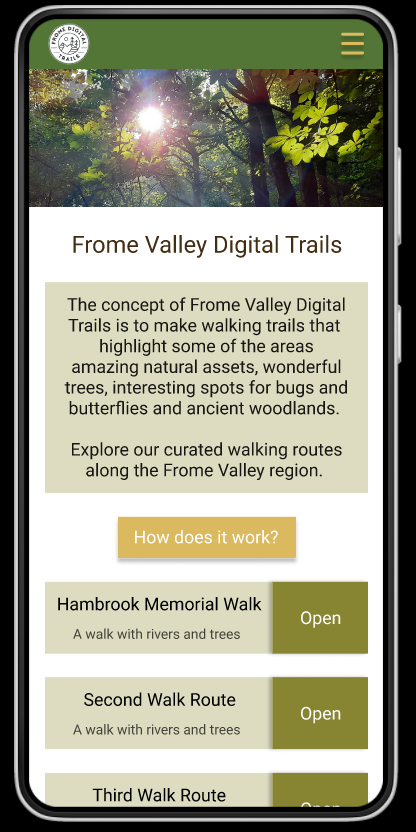
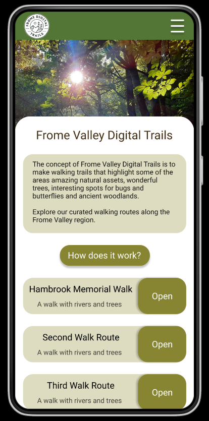
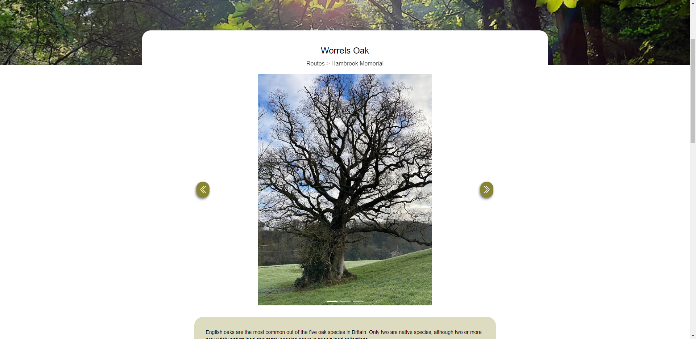
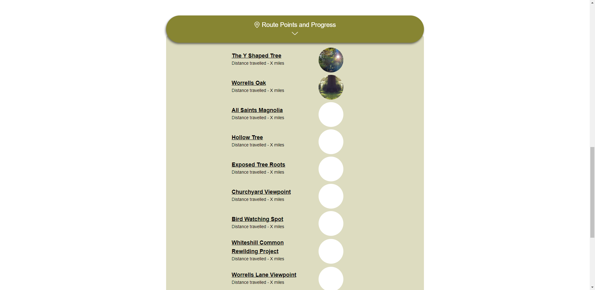
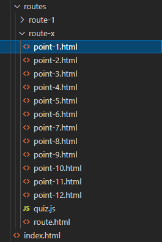

As alluded to in the previous entry, we had our first meeting with the
client. This was our opportunity to lay out the main topics which
would be required to set a full brief and begin working on the
project. Though we had previously suggested using Zoom and meeting at
midday, we ended up meeting half an hour earlier using Google.
The meeting itself was quick and concise and both Kseniia and I were
able to cover all the questions we had gathered. We learnt that the
target audience would be a very broad range from toddlers to adults
and is intended more so for those who wouldn't otherwise be going out
and about.
One thing we noted was just how open the project appeared to be; we
were told that we are free to use more or less any mapping tool we
want to for embedding purposes. What's more, the gamification aspects
would require both a manual and automatic means of checking off
locations. Automatic would be preferable and could potentially be
linked to the QR codes, but manual would cover any potential errors or
inconveniences.
The prototype webapp will likely be lacking in content as we are
reliant on the client to produce more content. We have an idea of what
type of content will be used - audio guides for the entire route,
drone footage, advised dress codes for the given route etc. But the
client so far doesn't have a large stockpile of resources. This is
manageable by using placeholders for the meantime.
Lastly, following our concerns with the speed of email communication
(or lack thereof), we asked the client if they would be happy to use
slack. It turns out they already had a slack group for the project, so
now we just have to wait to be invited.
This week we were invited to our client's Slack group and were
provided some more information about the content requirements of the
site. We were also provided a link to the client's original website
and made note of a few questions that would need to be answered before
the web-app is designed.
Firstly, the client's original documentation made mention of an app -
but we were under the impression that we would be designing and
developing a web-app, so clarification would be needed on that front.
Secondly, we would need clarification on where exactly the required
content would be stored - on the web-app, completely separate to the
original website, or the original website itself. Thus we are unsure
exactly how the website and web-app will be connected and if the
web-app will simply be part of the existing website.
Due to these questions, we began writing up a project brief outlining
the must haves and should haves, technical and design requirements,
but need these few questions to be answered before we can finalize the
brief.
On Tuesday we spoke with Jack about what we needed to complete next
and were given some advice:
-
Competitor reference can be used more as a starting point even
without actual competitors
- Go into the next meeting with a recommendation on features
-
Set an agenda based on meeting notes and sum it up conversationally
after
- Create a mood-board
- Come up with functionality
With this in mind we scheduled a meeting for Wednesday and met with the
client. We discussed the few remaining questions we had and received
adequate answers for all of them. This included confirmation that the
app could be a webapp and where the webapp might eventually be located.
The client also agreed with both our recommendations: a) content be
stored in the webapp itself rather than the client's website and b) use
a mini quiz as part of the collectables feature.
We wrote up a brief summing up all the points that we had agreed on
during our meetings and posted it in the Frome Valley slack group for
approval. We had positive responses and only one discussion point
about a timeframe. We explained that we would be presenting during
January but that we did not yet have a set date for the final
deliverable.
Following the presentation, Kseniia began reworking the home page
prototype in Figma. Meanwhile, I implemented a working carousel system
and further researched potential options for showcasing information.
As part of this process, we messaged the client on slack with our
research and proposed two main solutions - giving preference for the
second. This solution would involve creating a separate webpage for
each individual route point rather than implementing a more complex
javascript based solution.


This week we took on feedback about the Figma design and made a note of considerations and changes to follow:
- Make some variations on the colour schemes
- Keep all buttons the same colour tot encourage interaction and establish consistency
- The logo could be slightly bigger
- Font sizes are too large - consider mobile design guidelines
- Condense the amount of text by using icons - more visuals
- Develop an icon set for the walks and each point (consider what style the icons will be)
This week I (Kseniia) continued working on the prototype for the web app. According to the feedback, the colour pallete was corrected in order to make it more simple and consistent. The sizes of some of the elements, such as the logo and text, were adjusted to fit the mobile phone screens better.
Furthermore, I designed the rest of the pages for the route points and used the content given by the client to fill them in. In the meantime, Cameron continued working on the web app and started implementing the design of the prototype to it. Progress with using local storage for the project has also been made.

I continued finishing the prototype by adjusting some of the design elements. Next, I combined the progress and route points sections together in order to optimize the space on the screen. I have also moved the route information text to the top of the page above the map so that it is more accessible for the user.
Cameron continued working on the web app and implemented the design for the route and points pages according to the amended hi-fi prototype. Image carousels have been added and styled and work began on implementing the quiz functionality using local storage.

This week, I have contacted the client to give them an update on the progress that has been made so far, as well as get their approval for the design of the Figma prototype of the web app. I have informed them that Cameron is currently in the process of coding the web app and that the project is on track. I also asked the client to provide us with more content, such as images and text, if possible in order to improve the project even more. The design of the prototype has been approved and the client was very happy with it, so the work on the web app continued. We were also given a new map to embed into the current route page, instead of the one that we were using before.
We have also discussed the situation with the QR codes, as the client was wondering if it is possible to use the same QR code for various routes in order to save money. We have explained that it is not possible to use the same QR code for 2 routes, however, we offered a solution that involves cycling through live routes (changing the content and the route on the page linked to the QR code).
Furthermore, Cameron continued working on coding the web app this week and has focused on creating the quiz at the end of the information page. He successfully managed to create the quiz, which rewards the user with a sticker, when answered correctly.
During the first two weeks of March, we continued working on the web app. Cameron added the second route point (Worrells Oak) to the webapp with all of the given content and pictures, as well as made the second quiz and sticker reward. The design of the actual web app was also adjusted to better fit the one in the prototype, which was approved by the client last week.
Furthermore, once all of the work was done, the link to the webapp was sent through Slack to the client for approval. We were told by the client that the web app is exactly what they wanted and fits their brief well. They also mentioned that the project is on track and they are happy with it. We also asked the client for more content to add to the webapp and if they wanted more routes points added to the current route, so that it will be easier for them to change and add more information in the future. We agreed to have 12 points in total for the current route.

This week we focused on finishing the web app according to the client’s wishes and making it easier to update in the future. Cameron added the extra 10 route points to the webapp that we agreed on last week. During our last communication with the client, we asked them for more content to add to the webapp. We were send a few folders with pictures this week, so we added them to the new points. The JavaScript code for the quiz has also been simplified and reformated, so that it will be easier for the client to update and adjust the information in the future.

As we are getting closer to the deadline for the project, we were focusing on finishing everything up for the final hand-in to the client. As I was working on the UX Design part for this project, I have spent these weeks on finishing all of the necessary documentation and files and putting it all together. Cameron was preparing for the final hand-in by creating a template with instructions for the client that they can later use to add more routes and points to the web app. Furthermore, we have made a showcase video, that explains how the webapp was created and the process we went through, as well as the final result. We have also started writing our professional documentation for the final submission.
